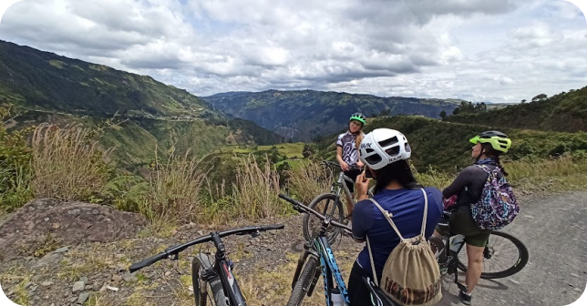

Social Media

Recorrer las montañas del departamento de Nariño por sus caminos ancestrales ahora convertidos en trochas, a bordo de una bicicleta con tus ganas de respirar y vivir la magia que resguardan estas montañas.
Parchate el fin de semana en compañia de mas amantes del ciclismo y comparte la experiencia de reorrer magicos senderos.
